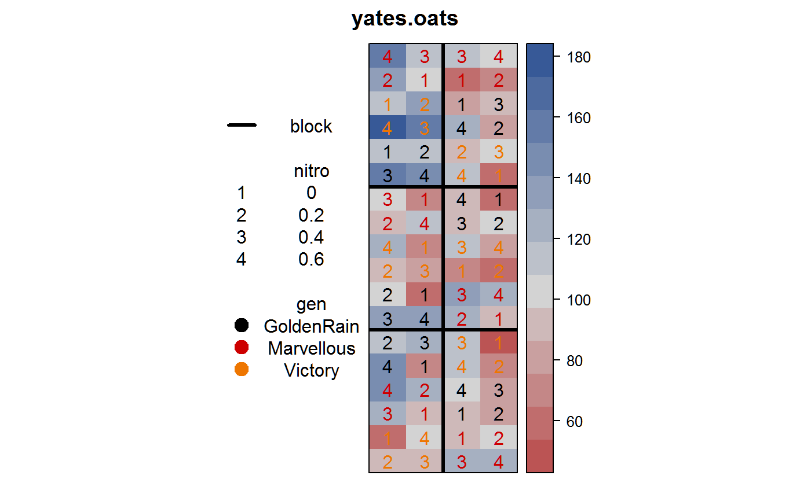
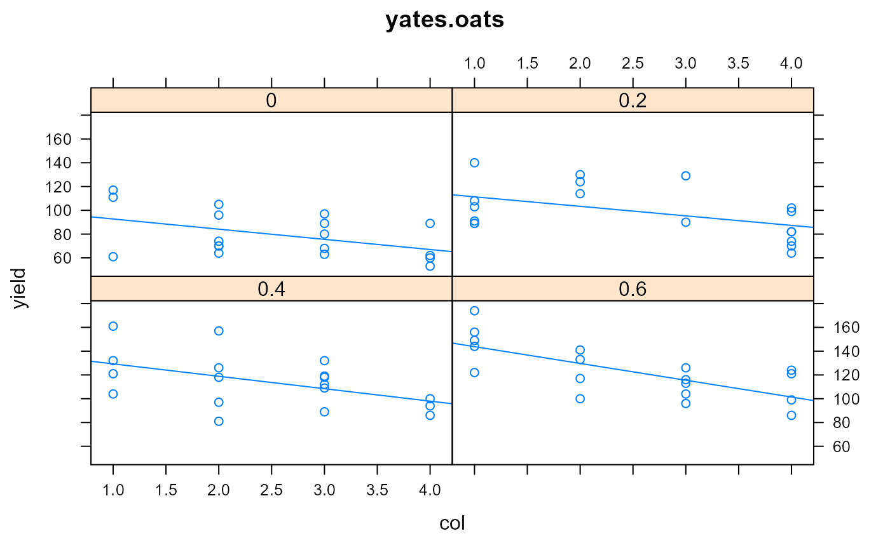

yates.oats.RdThe yield of oats from a split-plot field trial conducted at Rothamsted in 1931.
Varieties were applied to the main plots.
Manurial (nitrogen) treatments were applied to the sub-plots.
Each plot is 1/80 acre = 28.4 links * 44 links.
Field width: 4 plots * 44 links = 176 links.
Field length: 18 rows * 28.4 links = 511 links
The 'block' numbers in this data are as given in the Rothamsted Report. The 'grain' and 'straw' values are the actual pounds per sub-plot as shown in the Rothamsted Report. Each sub-plot is 1/80 acre, and a 'hundredweight (cwt)' is 112 pounds, so converting from sub-plot weight to hundredweight/acre needs a conversion factor of 80/112.
The 'yield' values are the values as they appeared in the paper by Yates, who used 1/4-pounds as the units (i.e. he multiplied the original weight by 4) for simpler calculations.
rowrow
colcolumn
yieldyield in 1/4 pounds per sub-plot, each 1/80 acre
nitronitrogen treatment in hundredweight per acre
gengenotype, 3 levels
blockblock, 6 levels
graingrain weight in pounds per sub-plot
strawstraw weight in pounds per sub-plot
Report for 1931. Rothamsted Experiment Station. Page 143. http://www.era.rothamsted.ac.uk/eradoc/article/ResReport1931-141-159
Yates, Frank (1935) Complex experiments, Journal of the Royal Statistical Society Suppl 2, 181-247. Figure 2. http://doi.org/10.2307/2983638
library(agridat) data(yates.oats) dat <- yates.oats ## # Means match Rothamsted report p. 144 ## libs(dplyr) ## dat <!-- %>% group_by(nitro,gen) %>% --> ## summarize(grain=mean(grain)*80/112, ## straw=mean(straw)*80/112) libs(desplot) # Experiment design & yield heatmap desplot(yield ~ col*row, dat, out1=block, num=nitro, col=gen, cex=1, aspect=511/176, # true aspect main="yates.oats")# Roughly linear gradient across the field. The right-half of each # block has lower yield. The blocking is inadequate! libs("lattice") xyplot(yield ~ col|factor(nitro), dat, type = c('p', 'r'), xlab='col', as.table = TRUE, main="yates.oats")if(0){ libs(lme4) # Typical split-plot analysis. Non-significant gen differences m3 <- lmer(yield ~ nitro * gen + (1|block/gen), data=dat) # Residuals still show structure xyplot(resid(m3) ~ dat$col, xlab='col', type=c('p','smooth'), main="yates.oats") # Add a linear trend for column m4 <- lmer(yield ~ col + nitro * gen + (1|block/gen), data=dat) # xyplot(resid(m4) ~ dat$col, type=c('p','smooth'), xlab='col') ## Compare fits AIC(m3,m4) ## df AIC ## m3 9 581.2372 ## m4 10 557.9424 # Substantially better } # ---------------------------------------------------------------------------- if(0){ # Marginal predictions from emmeans package and asreml::predict # --- nlme --- libs(nlme) libs(emmeans) # create unbalance dat2 <- yates.oats[-c(1,2,3,5,8,13,21,34,55),] m5l <- lme(yield ~ factor(nitro) + gen, random = ~1 | block/gen, data = dat2) # --- asreml --- libs(asreml) m5a <- asreml(yield ~ factor(nitro) + gen, random = ~ block + block:gen, data=dat2) libs(lucid) vc(m5l) vc(m5a) emmeans::emmeans(m5l, "gen") predict(m5a, data=dat, classify="gen")$predictions$pvals } # ---------------------------------------------------------------------------- if(0){ # Demonstrate use of regress package, compare to lme libs(regress) dat$nitrof <- factor(dat$nitro) m6 <- regress(yield ~ nitrof + gen, ~block + I(block:gen), identity=TRUE, verbose=1, data=dat) summary(m6) ## Variance Coefficients: ## Estimate Std. Error ## block 214.468 168.794 ## I(block:gen) 109.700 67.741 ## In 162.558 32.189 # ordinal causes clash with VarCorr if(is.element("package:ordinal", search())) detach(package:ordinal) m7 <- lme(yield ~ nitrof + gen, random = ~ 1|block/gen, data=dat) lme4::VarCorr(m7) ## Variance StdDev ## block = pdLogChol(1) ## (Intercept) 214.4716 14.64485 ## gen = pdLogChol(1) ## (Intercept) 109.6929 10.47344 ## Residual 162.5591 12.74987 }